Networks 4
Table of Contents
- 1. Possible exam questions
- 2. Grade breakdown
- 3. Definitions
- 4. Network Edge
- 5. Network Structure
- 6. Packet delay
- 7. QoS Metrics
- 8. Layering
- 9. Application Layer
- 9.1. Application architectures
- 9.2. Process
- 9.3. Sockets
- 9.4. Addressing processes
- 9.5. Application layer protocol defines
- 9.6. What transport service does an app need?
- 9.7. HTTP
- 9.8. HTTP connections
- 9.9. Non-persistent order
- 9.10. Non-persistent vs persistent HTTP
- 9.11. Sample HTTP response codes
- 9.12. Proxy Servers (Web Caches)
- 9.13. Electronic Mail
- 9.14. DNS
- 9.15. P2P
- 9.16. Socket Programming
- 10. Transport Layer
- 10.1. Transport layer provides
- 10.2. Transport protocols run on end systems
- 10.3. Transport vs network layer
- 10.4. Transport Layer protocols
- 10.5. TCP vs UDP
- 10.6. Multiplexing and Demultiplexing
- 10.7. Principles of Reliable Data Transfer (rdt)
- 10.8. Pipelined protocols overview
- 10.9. TCP Overview
- 10.10. Flow Control
- 10.11. Congestion Control
- 10.12. TCP Fairness
- 11. Network Layer (not on midterm exam)
- 12. Mobile Networks
- 13. Exam papers sample questions
- 14. Delete at the end
1 Possible exam questions
- Security and history, not on the exam
- Four Sources of packet delay
- Persistent HTTP vs non-persistent HTTP
- TCP vs UDP
- Describe a scenario in which email travels from A to B, describe the journey through the servers
- SMTP
- SCTP be able to draw the multistreams
2 Grade breakdown
- CA 30%, 20% lab and 10% assessment (1 hour in-class, usually after Halloween)
- Exam 70% (no history)
3 Definitions
- RFC: Request for comments
- IETF: Internet Engineering Task Force
- Protocol: protocols define format, order of msgs sent and received among network entities, and actions taken on msg transmission, receipt
4 Network Edge
- Hosts: clients and servers. Servers often in data centers
- Access Networks, Physical Media: wired, wireless communication links
- Network Core: Interconnected routers, network of networks
- Packet-switching: hosts break application-layer messages into packets
- Two core function:
- Routing: determines source-destination route taken by packets
- Forwarding: move packets from router's input to appropriate output
- Connecting end systems to edge router is done via: residential access nets, institutional access networks, mobile access networks
5 Network Structure

6 Packet delay
There are four sources of packet delay: nodal processing, queuing delay, transmission delay, propagation delay
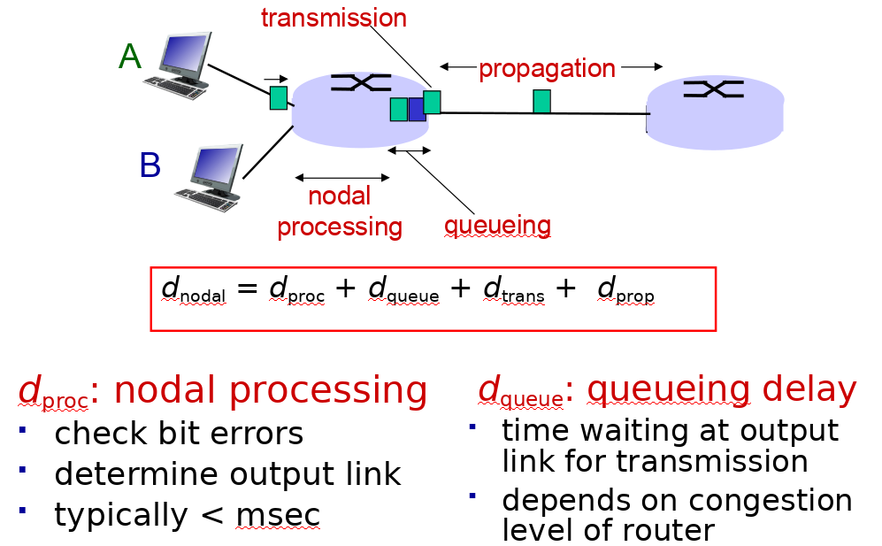
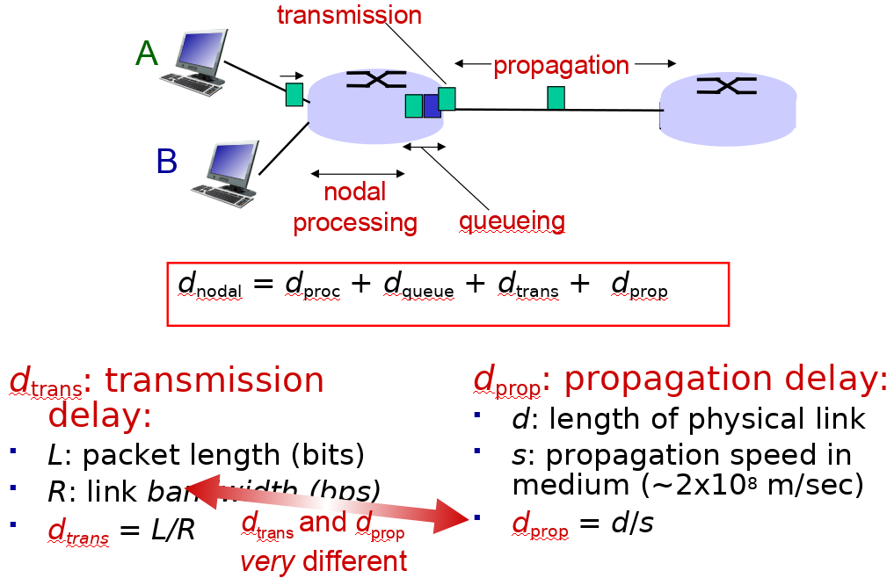
7 QoS Metrics
- Throughput
- Data loss
- Time sensitive
8 Layering
- Application: supporting network applications; FTP, SMTP, HTTP
- Transport: process-process data transfer; TCP, UDP
- Network: routing of datagrams from source to destination; IP, routing protocols
- Link: data transfer between neighbouring network elements: Ethernet, 802.11 (WiFi), PPP
Physical: bits "on the wire"
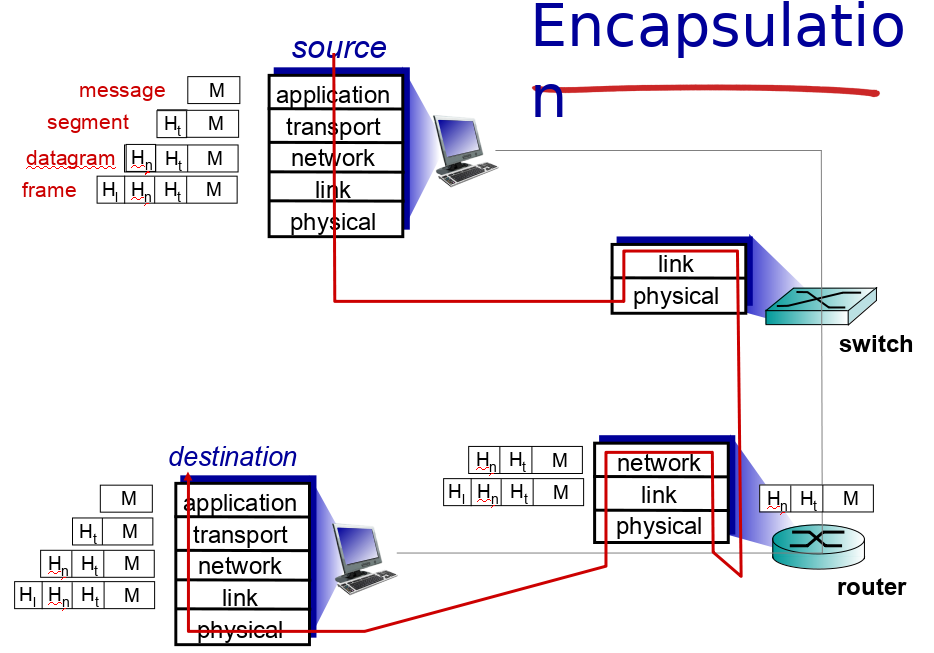
9 Application Layer
9.1 Application architectures
Client-server
- Server: always-on host, permanent IP address, data centers for scaling
- Clients: communicate with server, may be intermittently connected, may have dynamic IP address, clients do not communicate directly with each other
Peer-to-peer
- No "always-on" server
- Arbitrary systems directly communicate
- Peers request services from other peers
9.2 Process
- A program running within a host
- Within the same host processes use inter-process communication
- On different hosts processes communicate via exchanging messages
- Applications with P2P have both the client and the server process
9.3 Sockets
- Processes use sockets to send messages in/out
- Sockets are analogous to doors
9.4 Addressing processes
- To receive a message, process must have an identifier. The identifier contains both the IP and the port number
- Host device has a unique 32 bit IP address
9.5 Application layer protocol defines
- Types of messages exchanged: request, response
- Message syntax: what fields in messages & how fields are delineated
- Message semantics: meaning of information in fields
- Rules: when and how processes send & respond to messages
- Open Protocols: defined in RFC, allows for interoperability, e.g. HTTP, SMTP
- Proprietary Protocols: e.g. Skype
9.6 What transport service does an app need?
- Data Integrity: some apps need 100% data reliability, e.g. file transfer. Some can tolerate a loss, e.g. audio
- Timing: e.g. Telephony require a low delay
- Throughput: some apps (e.g. multimedia) require minimum amount of throughput to be effective, other apps ("elastic apps") make use of whatever they can get
- Security: encryption, data integrity, etc
9.7 HTTP
- Client-server model: Client is the requester and the server provides a response
- Uses TCP:
- Client initiates TCP connection (creates a socket) to server
- Server accepts TCP connection from client
- HTTP messages (app layer protocol messages) exchanged between browser (HTTP client) and Web server (HTTP server)
- TCP connection closed
- HTTP is stateless
- Protocols that maintain state are complex!
9.8 HTTP connections
- Non-persistent: at most one object sent over TCP, downloading multiple objects requires multiple connections
- Persistent: multiple object can be sent over a single TCP connection
9.9 Non-persistent order
- HTTP Client initiates TCP connection to HTTP server (process) at www.foo.bar on port 80
- HTTP server waits for connections on port 80 and accepts the connection, notifies the client about it
- HTTP client sends a HTTP request message (with URL) into TCP connection socket. Message indicates that the client wants some object
- HTTP server receives the request, forms a response containing the requested object and sends it into the socket
- HTTP server closes TCP connection
- HTTP client receives the response, finds out references to 10 more jpegs
- Steps 1-6 repeat
9.10 Non-persistent vs persistent HTTP
Non-persistent
- requires 2 RTTs per object
- OS overhead for each TCP connection
- browsers often open parallel connections
Persistent
- Server leaves connection open after sending response
- Subsequent HTTP massages between same client/server sent over open connection
- Client sends requests as soon as it encounters references
- As little as one RTT for all the referenced objects
9.11 Sample HTTP response codes
- 200 OK
- 301 Moved Permanently
- 400 Bad Request
- 404 Not Found
- 500 Server Error
9.12 Proxy Servers (Web Caches)
- Provides a cached version of a website at a closer range, i.e. proximity
- Typically installed by the ISP
- Conditional GET is an another way of dealing with cached results
9.13 Electronic Mail
Three major components
- User agents: mail reader
- Mail servers:
- Mailbox: contains incoming messages
- Message Queue: messages to go out
- SMTP:
- Uses TCP over port 25
- Three phases of transfer: handshaking, transfer of messages, closure
- Command/Response: Command (ASCII text), Response (Status Code)
- Messages in 7-bit ASCII
Mail sending process
- Alice uses UA to compose mail to x@foo.bar
- Alice's UA places the message on her mailserver
- Client side of Alice's server opens TCP with x@foo.bar's mailserver
- SMTP sends the message over TCP to the other mailserver
- x's mailserver places the message in x's mailbox
- x invokes UA to retrieve new messages
Mail access protocols
POP3
- Authorization Phase
- User gives auth details, servers responds with OK or ERR
- Transaction Phase
- Client gives:
list: list message numbersretr: retrieve message by numberdele: deletequit
- Client gives:
9.14 DNS
Domain Name System
- Distributed Database
- Application-layer protocol: hosts, name servers communicate to resolve names
- Hostname to IP translation
- Host aliasing
- Mail server aliasing
- Load distribution
Why not centralized DNS
- Single point of failure
- Traffic volume
- Distance issues
Maintenance
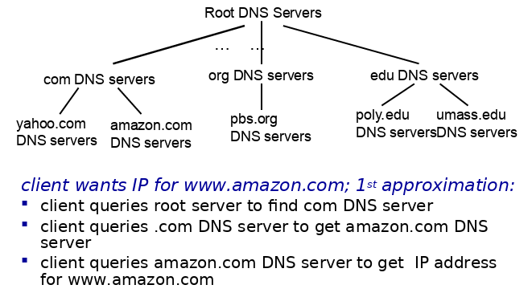
Root name servers
- Are contacted when local servers cannot resolve a hostname
- Root name server contacts the authoritative name server if name mapping is not known
Authoritative servers
- Hold top-level domains: com, edu, org, etc. also all national domains
- Some organizations may have their own authoritative servers
Local DNS
- Every ISP has one
- When a host makes a DNS query, the local DNS server is the first one contacted
Example
- When a server does not know the IP then it returns the address to the server that may have it, i.e. "I don't know this name, but ask this server"
9.15 P2P
- No always on servers
- Peers contact each other directly via IP addresses
- Example: Torrents, Skype (VoIP)
9.16 Socket Programming
- Goal: learn how to build client/server applications that communicate using sockets
- Socket: door between application process and end-to-end-transport protocol
- UDP and TCP socket types are used
- In UDP: there is no "connection" the data is just continuously streamed, no handshaking. Data may be lost.
- UDP provides unreliable transfer of groups of bytes (“datagrams”) between client and server
- In TCP: client must contact the server
- TCP provides reliable, in-order byte-stream transfer (“pipe”) between client and server
10 Transport Layer
10.1 Transport layer provides
- Process-to-process data delivery
- Error checking
- Additionally: reliable data transfer, congestion control
- Logical Communication between app processes running on different hosts
10.2 Transport protocols run on end systems
- Sending side breaks app messages into segments, passes to network layer
- Receiving side reassembles segments into messages, passes to app layer
10.3 Transport vs network layer
- Network layer: logical communication between hosts
- Transport layer: logical communication between processes
10.4 Transport Layer protocols
Services not available
- Delay guarantees
- Bandwidth guarantees
TCP
- Reliable, in-order delivery
- Congestion control
- Flow control
- Connection setup
- 3 way handshake: SYN, SYN-ACK, ACK
- Teardown: FIN, FIN-ACK, ACK
UDP
- Unreliable, unordered delivery
- No-frills extension of "best-effort" IP
- No handshake
SCTP
- Connection oriented
- Reliable data transfer
- Sequence preservation
- Flow and congestion control
- Multi-streams
- Multi-homing
- Preservation of msg boundaries
- Unordered reliable msg delivery
- 4 way handshake: INIT, INIT-ACK, COOKIE-ECHO, COOKIE-ACK
- Teardown process: SHUTDOWN, SHUTDOWN-ACK, SHUTDOWN-COMPLETE
10.5 TCP vs UDP
TCP
- Reliable
- Flow control
- Congestion control
- Does not provide: timing, minimum throughput guaranteed, security
- Connection-oriented
UDP
- Unreliable data transfer
- Dos not provide: reliability, flow control, congestion control, timing, throughput guarantee, security, connection setup
10.6 Multiplexing and Demultiplexing
- Multiplexing happens on the sending side: handle data from multiple sockets, add transport header (later used for demultiplexing)
- Demultiplexing happens on the receiving side: use header info to deliver received segments to correct socket
Demultiplexing
- Host receives an IP datagram
- Each datagram has source IP address and destination IP address
- Each datagram carries one transport-layer segment
- Each segment has source and destination port numbers
- Host uses IP addresses & port numbers to direct segment to appropriate socket
Connectionless demux
- When a host sends a datagram into a UDP socket, it must specify destination IP and PORT, source is not needed!
- When host receives UDP segment checks destination port
- Directs the segment to a socket with the given port
Connection-oriented demux
- TCP socket identified by 4 tuple: source IP, source PORT, destination IP, destination PORT
- Receiver uses all four values to direct the segment to an appropriate socket
- Server host may support many simultaneous TCP sockets, each identified by the 4 tuple
- Web servers have different sockets for each connecting client
10.7 Principles of Reliable Data Transfer (rdt)
- rdt is built on top of IP's unreliable service
- Pipelined segments
- Cumulative ACKs
- Single retransmission timer, triggered by:
- timeouts
- duplicate ACKs
- TCP provides a reliable channel of communication for the application layer
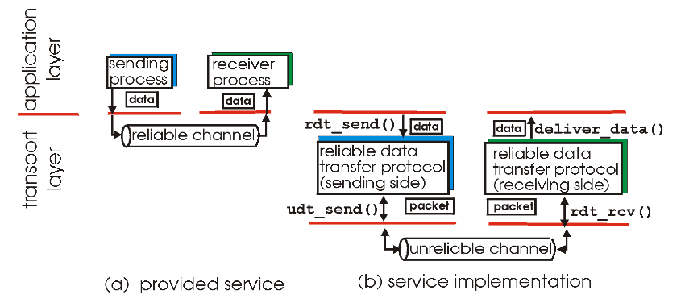
- rdt 3.0 in action
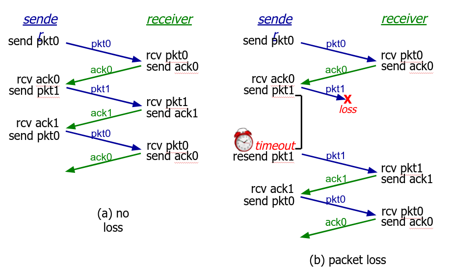
- rdt stop-and-wait operation
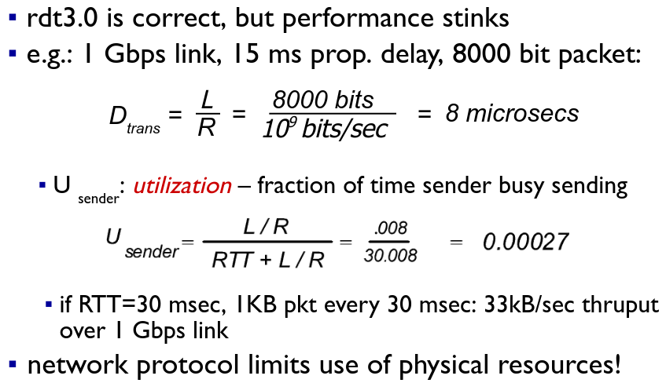
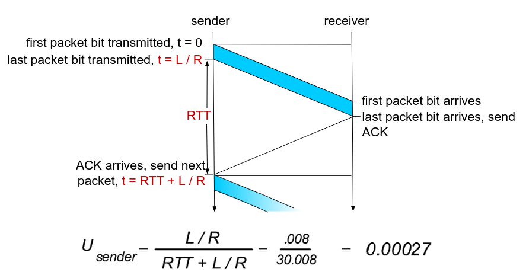
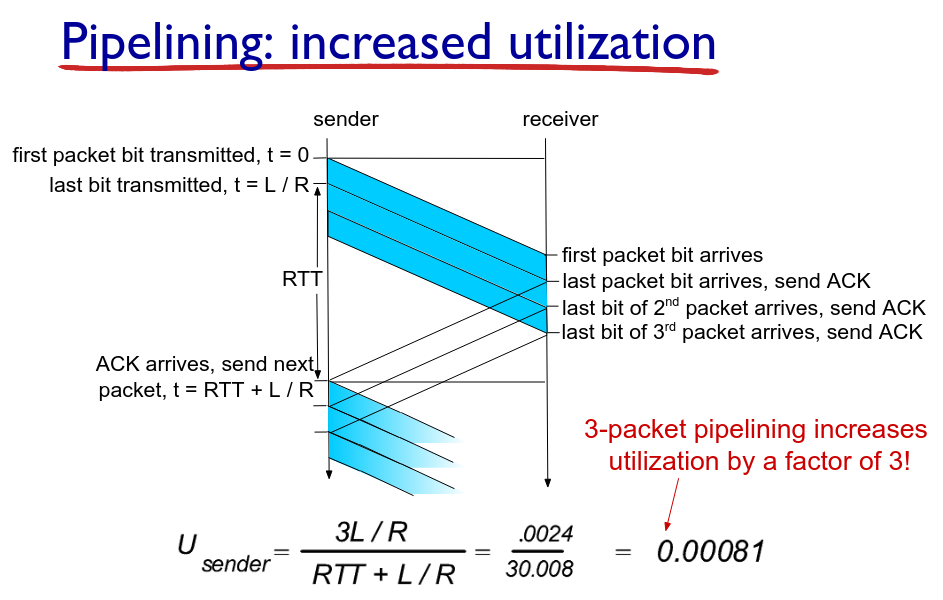
10.8 Pipelined protocols overview
- Go-back-N:
- Sender can have up to N unacked packets in pipeline
- Receiver only send cumulative ACK
Sender has a timer for the oldest unacked packet
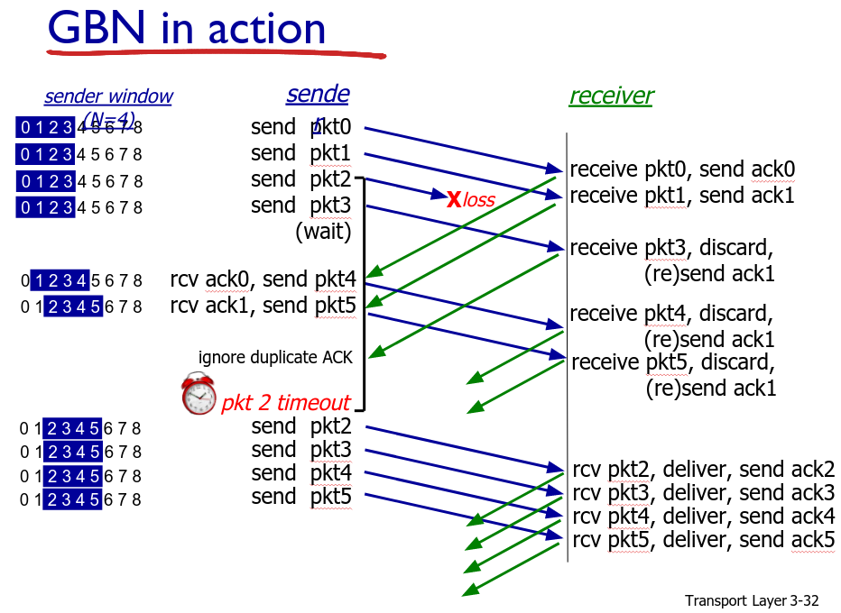
- Selective Repeat:
- Same as above, except receiver sends an ack for each of the received packets
Sender maintains a timer for each of the packets
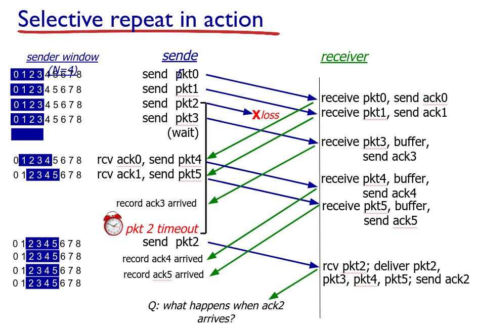
10.9 TCP Overview
- Point-to-point: one sender, one receiver
- Reliable, in-order byte stream
- Pipelined: TCP congestion and flow control set window size
- Full duplex data: bi-directional data flow in same connection; MSS: maximum segment size
- Connection oriented, handshaking
- Flow controlled: sender will not overwhelm receiver
Segment Structure
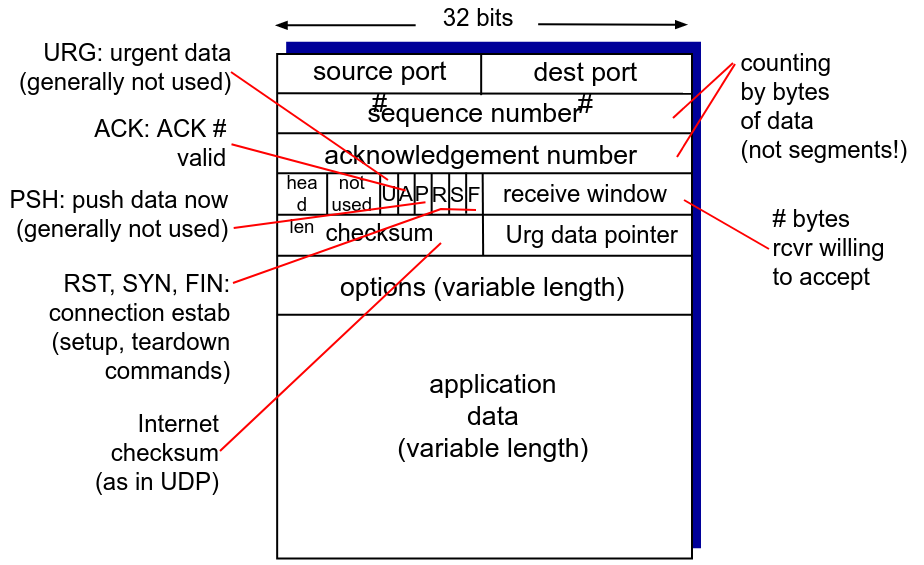
Sequencing
- Sequence Numbers: Byte stream "number" of first byte in segment's data
- Acknowledgements: sequence number of next byte expected from other side, cumulative ACK
- TCP does not specify how to handle out of order segments
RTT and Timeout
- SampleRTT: measured time from segment transmission until ACK received
- Timeout: longer than RTT, too short and premature timeouts occur, too long and the reaction to segments loss will be too large
Sender events
data rcvd from app:- Create segment with sequence number
- Seq number is byte-stream number of first data byte in segment
- Start the timer
timeout:- Retransmit segment that caused timeout
- Restart timer
ack rcvd:- If ack acknowledges a previously unacked segments
- Update what is known to be ACKed
Start timer if there are still unacked segments
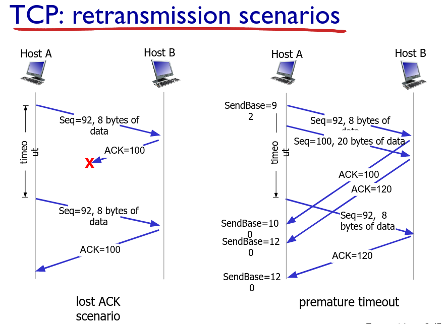
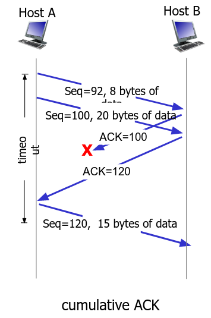
- If ack acknowledges a previously unacked segments
10.10 Flow Control
- Receiver controls the sender, so that sender won't overflow the receiver buffer
- Receiver advertises free buffer space in the
rwndvalue
10.11 Congestion Control
- "Too many sources sending too much data too fast for network to handle"
- Poor congestion control can cause: lost packets and long delays
TCP Additive Increase Multiplicative Decrease (AIMD)
- Sender increases transmission rate (window size), probing for usable bandwidth, until loss occurs
- Increases
cwnd(congestion window) by 1 MSS (max segment size) every RTT until a loss occurs, then it cutscwndby half and starts over again - Saw tooth like behaviour
TCP Slow Start
- Start with
cwndset to 1 MSS - Increase the window size exponentially, until a loss occurs (indicated by 3 duplicate ACKs)
- Then proceed with linear increase
10.12 TCP Fairness
- The goal is to provide the same amount of bandwidth to multiple sessions sharing the same bottleneck (i.e. router)
- Because of AIMD the connection bandwidth remains balanced between multiple competing sessions
- A lot of Video/Audio applications choose UDP because they do not want to have their transmission throttled and they also do tolerate packet loss
11 Network Layer (not on midterm exam)
- Protocol: IP (Internet Protocol)
11.1 Key Functions
- Forwarding: move packets from router's input to appropriate router output
- Routing: determine route taken by packets from source to destination
11.2 Planes
- Data Plane: determines how datagram arriving on router input port is forwarded to router output port
- Control Plane: determines how datagram is routed among routers along end-to-end devices
11.3 Switching Fabric
- Transfers packets from the input to the output, usually this NEEDS to happen at line speed, otherwise queuing might occur
11.4 Internet Protocol (IP)
Characteristics
- Packet-based network protocol
- Provides
- Physical network independence
- Connectionless
- Best-effort service
- Runs over any type of underlying transport
- Ethernet
12 Mobile Networks
12.1 Definitions
- MSC: Mobile Switching Center. Connects cells to wide area network, manages call setup, handles mobility
- Cell: Covers a regional area, has:
- BS: Base station
- Mobile Users: Attached to BS
- Air-interface: Link layer between BS and Mobile Users
12.2 Area, channels and concurrent calls handling
- Area of hex = 1.5√3 R2
12.3 Mobility
- Home network: permanent "home" of mobile
- Permanent address: can always be used to reach mobile
- Home agent: entity that performs mobility functions on behalf of mobile
- Visited network: network in which the mobile currently resides
- Care-of-address: address in visited network
- Foreign agent: entity in visited network the performs mobility functions of behalf of mobile
- Correspondent: entity that wants to connect to user
Indirect routing (inefficient)
- Use home agent to find out the location of where the we are on the visited network
- Further route the packets via home network
- Scenario of moving:
- Register with a foreign agent
- Foreign agent registers with home agent
- Home agent updates care-of-address
- Packets forwarded to mobile with new care-of-address (triangle routing problem, always needs to go through home agent)
Direct routing
- In here the correspondent first learns the care-of-address from the home agent and forwards packets directly to that address
- If the foreign agent (FA) changes the previous fa arranges to have the data forwarded (it came late, before home agent knew about the change)
13 Exam papers sample questions
13.1 Questions
- Telecoms (3G/LTE)
- Network layer
- Transport layer
- Mixture
13.2 Queuing is NOT on the paper
13.3 2017 Q3 (b), IP address here is different
Network address: 192.228.17.0
192 is class C address => meaning that the first 3 octets are the network, and the last octet is the host
Network is thus: 192.228.17
Host is thus: 0
Host in binary is: 00000000, we need 6 subnets so we need three bits to be able to assign 6 networks (23 = 8, place for 6)
3 x 8 + 3 => 27 bits (i.e. class C, 3 octets times 8 + 3 bits for assigning)
11111111.11111111.11111111.11100000
so the subnet mask is: 11100000 => in decimal is 224
(i) subnet mask is: 255.255.255.224
(ii)
subnet (0): 192.228.17.(000|00001) to 192.228.17.(000|11110)
192.228.17.1 to 192.228.17.30
subnet (1): 192.228.17.(001|00001) to 192.228.17.(001|11110)
192.228.17.33 to 192.228.17.62
subnet (2): 192.228.17.(010|00001) to 192.228.17.(010|11110)
192.228.17.65 to 192.228.17.94
subnet (3): 192.228.17.(011|00001) to 192.228.17.(011|11110)
192.228.17.97 to 192.228.17.126
subnet (4): 192.228.17.(100|00001) to 192.228.17.(100|11110)
192.228.17.129 to 192.228.17.158
subnet (5): 192.228.17.(101|00001) to 192.228.17.(101|11110)
192.228.17.161 to 192.228.17.190
13.4 Answers to question
1
- Propagation delay: length of the wire, speed of light, constant
- Transmission delay: speed of the link, packet length (L) / link bandwidth (R). Example 5 000k bits / 1 000k bit/s = 5 s, constant
- Processing delay: processing of the node itself, constant
- Queuing delay: varies depending on the congestion, variable
2
- It’s a point to point multi service in which data is transmitted from a single source entity to multiple recipents. Brings improved performance thanks to higher and more flexible LTE bit rates, single frequency network operations.
- Are a significant element in todays services as in “Where am I” but combined with determining points of interest, ie restaurants, shopping or finding a route.
- Single layer beamforming uses a directional beam to increase the throughput between the UE and eNode B. As the name suggests, dual layer beamforming uses two transport blocks of spatial multiplexing with beam forming. This results in higher throughput over a large distance between the UE and eNode B.
3 is ok, simple calc
4
- HLR is like edge router in a home network. Say you are with Three, then your Home Location Register is Three
- VLR is like and edge router in a foreign network. Visited Location Register is the visited network
5
- Yes they can, they can use the same IP because the foreign agent can work in the exact same way as a NAT and have inner mappings to the connected UEs
6
- Each layer passes on information with its own distinct protocol and therefore each layer needs to "pack" data in its own way, so that upon arrival it can be unpacked. This is why de-encapsulation and encapsulation exist
7
196.208.10.0
Class C so first 3 octets are the mask
We need six subnets so that is 3 bits (23 = 8, two spare)
I)
So the subnet mask is: 11111111.11111111.11111111.11100000 = 255.255.255.224
II + III)
subnet 0
196.208.10.(000|00001) to 196.208.10.(000|11110)
196.208.10.1 to 196.208.10.30
subnet 1
196.208.10.(001|00001) to 196.208.10.(001|11110)
196.208.10.33 to 196.208.10.62
subnet 2
196.208.10.(010|00001) to 196.208.10.(010|11110)
196.208.10.65 to 196.208.10.94
subnet 3
196.208.10.(011|00001) to 196.208.10.(011|11110)
196.208.10.97 to 196.208.10.126
subnet 4
196.208.10.(100|00001) to 196.208.10.(100|11110)
196.208.10.129 to 196.208.10.158
subnet 5
196.208.10.(101|00001) to 196.208.10.(101|11110)
196.208.10.161 to 196.208.10.190
8, IPv4 vs IPv6
- No fragmentation
- Increased security
- Header encryption (QoS)
- Labeling fields (not implemented as of yet, but may prove useful in the future) (QoS)
- 32 bits vs 128 bits length
- No fixed header length
- There will be flag day, one day to convert from v4 to v6
9, done before
- Discovery
- Offer
- Request
- ACK
10
- Variations in delay, aka fluctuations
11
- Buffer
- Delay the playout time and use a buffer to minimise jitter
12
- 6
- HELLO - sign on
- MAIL - from who
- RCPT - to who
- DATA - inform that data will be coming next
- body - the actual body of the message
- QUIT
13
- CIDR (class inter-domain routing)
- It is used if the standard classes don't fit the use case, either too small or too big
- Then we use CIDR to create subnets as we see fit
- Saves IP addresses
14
- Reliability and expand
15, done before
16, done before
- there is a controversial part about it in which the router peeks at the port number and is no supposed to
17
- double check the answer here
18
- A user types in www.google.ie in his browser and thus requests a TCP connection with the server via a HTTP GET request.
- TCP connection is established with the server usually over port 80, or 443 for SSL (DNS is skipped in this explanation)
- The server responds with an index.html file and transmits it back over TCP using the application layer’s HTTP message.
- The client receives the index.html file, finds out that it needs more objects (images,fonts, js files etc.)
- The client makes more GET requests for the needed objects
- Server responds with the remaining objects
- The client’s webbrowser can then render the full page
- Client closes the TCP connection with the server (or the server does it after a timeout)
19
- RTP uses timestamping for its own stream
- NTP is used to synchronize with the global time (wall clock)
20
- You can differentiate it by SSRC (different source IPs)
21
- It uses TCP and expand
- Flow control, etc.
- Sequencing
- Checksum (sometimes)
22
- Only in TCP
- TCP probes the network, listens for packetloss
- "Too many sources sending too much data too fast for network to handle"
- Poor congestion control can cause: lost packets and long delays
- TCP Additive Increase Multiplicative Decrease (AIMD)
- Sender increases transmission rate (window size), probing for usable bandwidth, until loss occurs
- Increases
cwnd(congestion window) by 1 MSS (max segment size) every RTT until a loss occurs, then it cutscwndby half and starts over again - Saw tooth like behaviour
- TCP Slow Start
- Start with
cwndset to 1 MSS - Increase the window size exponentially, until a loss occurs (indicated by 3 duplicate ACKs)
- Then proceed with linear increase
- Start with
23
Multiplexing (mux) is a process that occurs within the transport layer after the Application Layer passes a message down to the transport layer. The application (process) uses a socket (with a port number) to transmit a message. Both the transmitting and receiving processes have an IP address and a port number. The transport layer adds headers that contain the source port number, source IP address, destination port number and destination IP address; the four values are known as the 4-tuple. The 4-tuple is used to uniquely identify each of the packets that get transmitted between hosts. This kind of technique is crucial for the application layer to correctly identify to which application the packets need to go to and from which they came from.
De-multiplexing (demux) is a reverse process of multiplexing. During demux the transport layer “unpacks” the 4-tuple and passes the message to the correct socket and thus to the right application.
24
- Multihoming, multistreaming
25
- Easy, in the notes